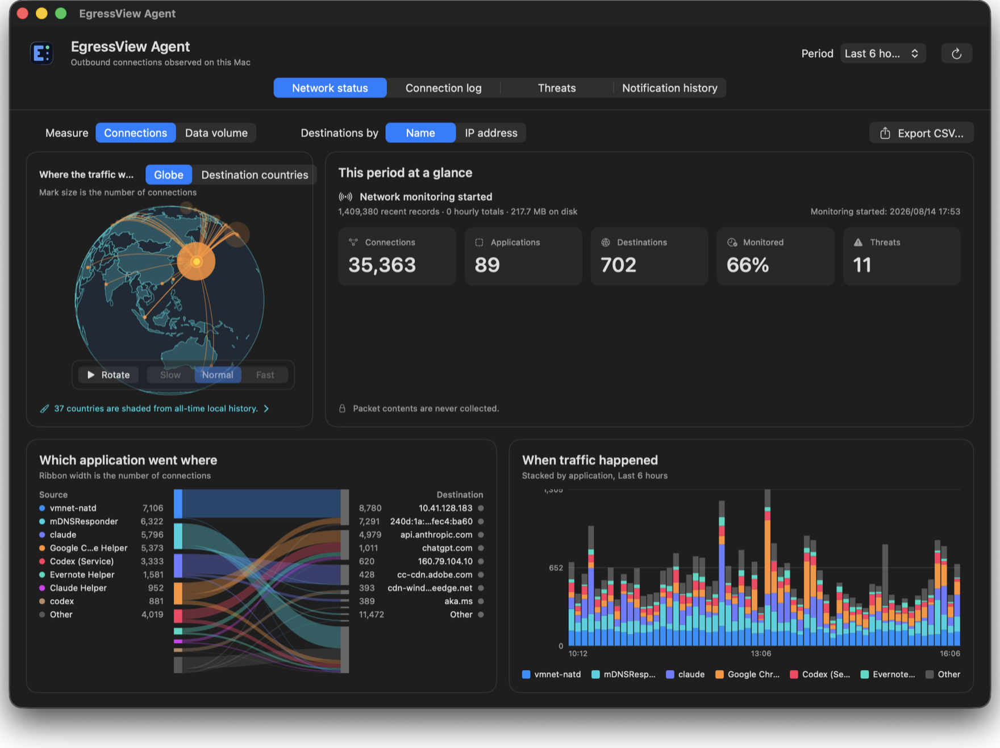

What you get
Which app went where
Country, domain and IP address — and an unfamiliar destination arrives with the program that reached for it, not just an address.
It says what it does not know
Gaps in monitoring are shown as gaps. An empty threat list is never presented as "nothing found" unless something was actually checked.
Nothing is sent to be looked up
Threat lists and locations come to your Mac and the matching happens here. No destination of yours is sent anywhere to be identified.
Works on its own
An EgressView Hub adds fleet-wide history and threat feeds, but the agent is useful without one.
Installing
- Open the .pkg and follow the installer. It places the agent in Applications and starts it.
- Choose Network monitoring from the menu bar icon. macOS asks you to approve a System Extension — once.
- Optional: enrol with an EgressView Hub. Sending is off until you complete that, and the agent shows the destination and exactly what will and will not be sent first.
Updates are offered by the agent itself and install the same way. Approving the System Extension again is not required. Full instructions are in the install guide.
How to verify this app
Signed by Developer ID, notarised by Apple, and stapled.
# the checksum published in the update manifest curl -s https://dl.egressview.com/macos/manifest.json # the file you actually downloaded — the two must match shasum -a 256 ~/Downloads/egressview-agent-VERSION.pkg # and what macOS itself thinks of it spctl --assess --type install --verbose=4 ~/Downloads/egressview-agent-VERSION.pkg